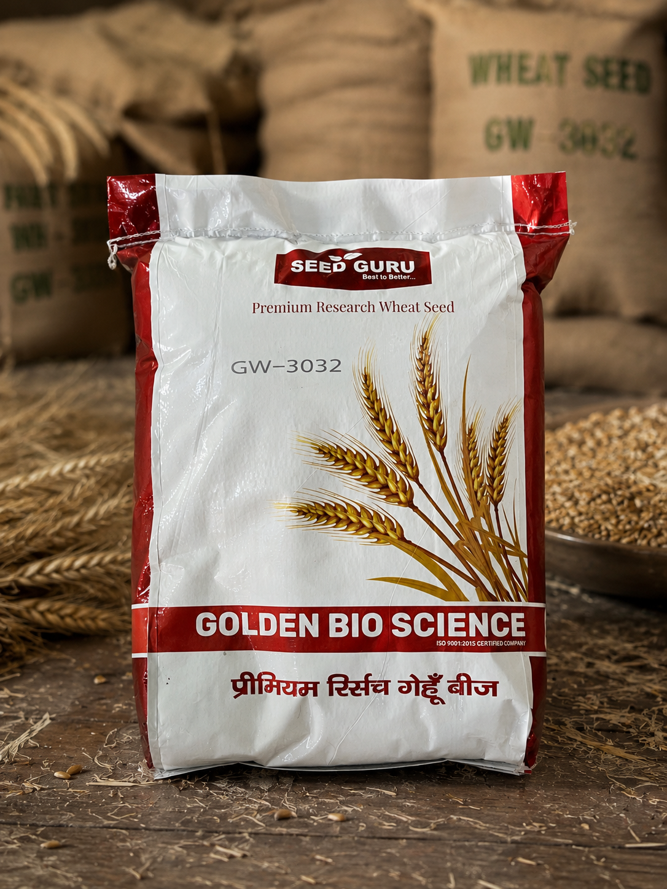

<!-- Seed Guru GW-3032 | Product Section
     Upload this file and "seed-guru-gw-3032.png" in the same folder.
     If your website stores the image elsewhere, change the img src below. -->
<style>
  .sg-product{--red:#8c1c1c;--red-d:#6b1212;--gold:#b8860b;--wheat:#f6efe0;--ink:#2a2118;--muted:#6b5f52;--line:#e6dcc7;
    font-family:"Segoe UI",Roboto,Arial,sans-serif;color:var(--ink);background:#fff;max-width:1180px;margin:0 auto;padding:48px 24px;box-sizing:border-box}
  .sg-product *{box-sizing:border-box}
  .sg-top{display:grid;grid-template-columns:minmax(0,5fr) minmax(0,6fr);gap:48px;align-items:start}
  .sg-media{background:var(--wheat);border:1px solid var(--line);border-radius:6px;overflow:hidden}
  .sg-media img{display:block;width:100%;height:auto}
  .sg-brand{font-size:15px;font-weight:600;color:var(--red);letter-spacing:.02em;margin:0 0 8px}
  .sg-product h2{font-family:Georgia,"Times New Roman",serif;font-size:clamp(28px,4vw,42px);line-height:1.15;margin:0 0 14px;color:var(--ink)}
  .sg-lead{font-size:17px;line-height:1.65;color:var(--muted);margin:0 0 24px;max-width:60ch}
  .sg-badges{display:flex;flex-wrap:wrap;gap:10px;margin:0 0 28px;padding:0;list-style:none}
  .sg-badges li{font-size:14px;font-weight:600;color:var(--red-d);background:var(--wheat);border:1px solid var(--line);border-radius:999px;padding:7px 14px}
  .sg-product h3{font-family:Georgia,"Times New Roman",serif;font-size:22px;margin:0 0 14px;color:var(--red-d)}
  .sg-table{width:100%;border-collapse:collapse;font-size:15px}
  .sg-table th,.sg-table td{text-align:left;padding:12px 14px;border-bottom:1px solid var(--line);vertical-align:top}
  .sg-table th{width:38%;font-weight:600;color:var(--muted);background:var(--wheat)}
  .sg-table tr:first-child th,.sg-table tr:first-child td{border-top:2px solid var(--red)}
  .sg-guide{margin-top:56px;background:var(--wheat);border-left:6px solid var(--red);border-radius:4px;padding:32px 32px 28px}
  .sg-guide-grid{display:grid;grid-template-columns:repeat(3,minmax(0,1fr));gap:20px;margin-top:18px}
  .sg-step{background:#fff;border:1px solid var(--line);border-radius:4px;padding:20px}
  .sg-step strong{display:block;font-size:13px;color:var(--gold);margin-bottom:6px}
  .sg-step p{margin:0;font-size:16px;line-height:1.55}
  .sg-note{margin:18px 0 0;font-size:13px;color:var(--muted)}
  @media (max-width:820px){
    .sg-top{grid-template-columns:1fr;gap:28px}
    .sg-guide-grid{grid-template-columns:1fr}
    .sg-guide{padding:24px 20px}
    .sg-product{padding:32px 16px}
  }
</style>

<section class="sg-product" aria-labelledby="sg-title">
  <div class="sg-top">
    <div class="sg-media">
      
    </div>

    <div>
      <p class="sg-brand">Seed Guru &middot; Golden Bio Science</p>
      <h2 id="sg-title">GW-3032 Premium Research Wheat Seed</h2>
      <p class="sg-lead">Seed Guru GW-3032 is a premium research wheat seed from Golden Bio Science, an ISO 9001:2015 certified company. It is suitable for sowing in the Rabi (winter) season.</p>

      <ul class="sg-badges">
        <li>Premium Research Seed</li>
        <li>Rabi Season</li>
        <li>ISO 9001:2015 Certified Company</li>
      </ul>

      <h3>Key Details</h3>
      <table class="sg-table">
        <tr><th scope="row">Crop</th><td>Wheat (<em>Triticum aestivum</em>)</td></tr>
        <tr><th scope="row">Variety</th><td>GW-3032</td></tr>
        <tr><th scope="row">Type</th><td>Premium Research Wheat Seed</td></tr>
        <tr><th scope="row">Season</th><td>Rabi (winter)</td></tr>
        <tr><th scope="row">Brand</th><td>Seed Guru</td></tr>
        <tr><th scope="row">Manufacturer</th><td>Golden Bio Science (ISO 9001:2015 Certified)</td></tr>
        <tr><th scope="row">Category</th><td>Agriculture &gt; Seeds &gt; Cereal Crops &gt; Wheat</td></tr>
      </table>
    </div>
  </div>

  <div class="sg-guide">
    <h3>Sowing Guide</h3>
    <div class="sg-guide-grid">
      <div class="sg-step"><strong>Best sowing time</strong><p>1 to 20 November</p></div>
      <div class="sg-step"><strong>Seed rate</strong><p>About 20 kg per acre. Increase by 10&ndash;15% for late sowing.</p></div>
      <div class="sg-step"><strong>Field preparation</strong><p>Sow in well-prepared land and irrigate on time.</p></div>
    </div>
    <p class="sg-note">General guidance only. Follow local agricultural advice for your region and soil conditions.</p>
  </div>
</section>
